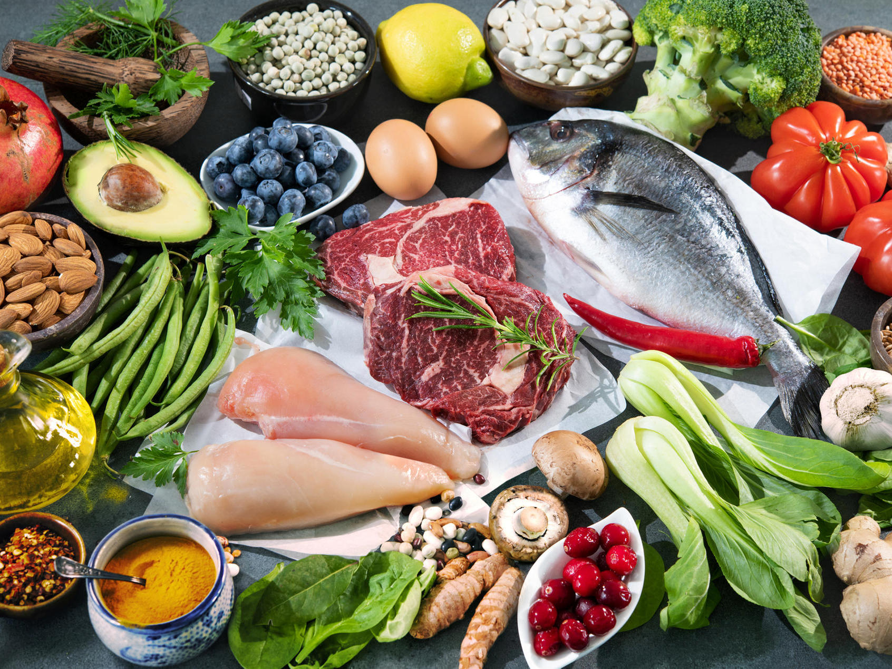
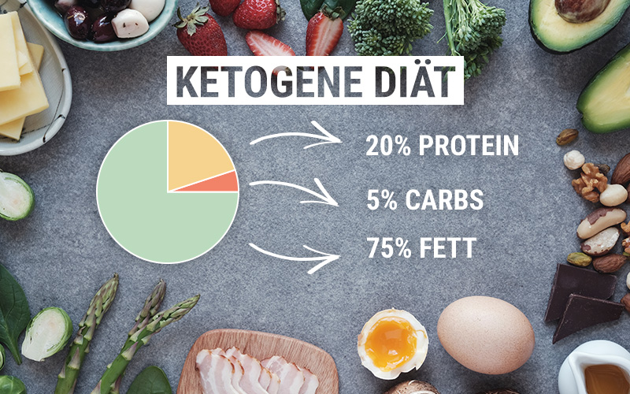

Low Carb Diät
Was versteht man unter Low Carb Diät?
Der Begriff „Low Carb“ stammt aus dem Englischen („low carbohydrates”) und bedeutet übersetzt „wenige Kohlenhydrate”. Bei einer Diät dieser Art handelt es sich also um eine kohlenhydratarme Ernährung, bei
der hauptsächlich Lebensmittel wie Fisch, Fleisch, Gemüse, Nüsse, Kerne und Milchprodukte verzehrt werden. Wieviele Kohlenhydrate täglich verzehrt werden dürfen ist immer unterschiedlich, aber so allgemein
um die 50g-100g.

Vorteile
- Anfangs sorgen Low Carb Diäten für einen schnellen Gewichtsverlust – was von vielen Menschen als motivierend empfunden wird.
- keine Heißhungerattacken, weil Kohlenhydrate treiben den Insulinspiegel erst in die Höhe, danach fällt er ab – was relativ bald wieder zu Appetit und manchmal zu regelrechtem Heißhunger führt. Bei Low Carb Diäten besteht dieses
Problem in der Regel nicht, denn man isst vor allem Fett und Eiweiß.
- Du fühlst dich länger satt, weil Low Carb Diäten auf eine eiweißreiche Kost setzen. Eiweiß ist der Nährstoff, der am langsamsten verdaut wird. Dadurch hält der Sättigungseffekt länger an als bei anderen Nährstoffen.
- schnellerer Fettabbau: Der relativ niedrige Insulinspiegel bei kohlenhydratarmer Ernährung hat den weiteren Vorteil, dass der Fettabbau ungehindert stattfinden kann
Wie funktioniet Low Carb?
Kohlenhydrate sind die Säulen unserer körperlichen und geistigen Leistungsfähigkeit. Aber durch den Defizit soll der Körper dazu gebracht werden Fett als Treibstoff zu benutzen. Und genau das ist die Stärke der Low Carb Diät, denn durch
die Reduktion der Kohlenhydrate vertrocknet für unseren Körper diese geliebte Energiequelle zeitweise und er muss seine Energie aus (Körper)Fett beziehen. Aber besonders am Anfang fühlst du dich sehr träge, da dein Körper viel weniger Energie
zur Verfügung hat und es seine Zeit braucht bis dieser sich an die neuen Umstände gewöhnt hat. Daher ist es empfehlenswert, wenn du physicher oder psychischer Anstrengung ausgesetzt bist, trotzdem genügend Kohlenhydrate zu dir zu nehmen.
Ketogene Diät
Was versteht man unter Ketogene Diät?
Die Ketogene Diät ist eine Low-Carb-Diät bei der maximal fünf Prozent der täglichen Nahrungsmenge aus Kohlenhydraten bestehen. Diese Ernährungsform basiert auf der Annahme, dass nicht Fett dick macht, sondern Kohlenhydrate. Gegessen
werden vorwiegend Fett und Eiweiß, welche hauptsächlich in Form von Fleisch und Eiern zu sich genommen wird. Durch den Mangel an Kohlenhydraten während der Ketogenen Diät ändert der Körper seinen Stoffwechsel - es werden Fettdepots zur Energiegewinnung
abgebaut. Diesen Vorgang nennt man Ketose. Empfohlen wird ein Verhältnis der Energieträger von 70 bis 80 Prozent Fett, 20 bis 25 Prozent Eiweiß und fünf Prozent oder weniger Kohlenhydrate.

Vorteile
- Der hohe Eiweißanteil macht schneller satt und lässt das Hungergefühl länger ausbleiben. Eine Gewichtsabnahme ist also wahrscheinlich.
- Häufig berichten Menschen, die sich an die Ketogene Diät halten, dass sie sich subjektiv besser fühlen.
- Die Cholesterinwerte von Personen, die eine Ketogene Diät einhalten, sind trotz des phasenweise sehr hohen Fettanteils geringfügig besser sind als die der Durchschnittsbevölkerung.
Risiken
- Der hohe Anteil an Fett und Eiweiß kann aber zu Verdauungsstörungen, Müdigkeit und in der Anfangsphase sogar zu Erbrechen führen.
- Darüber hinaus besteht die Gefahr einer Ketoazidose, also einer Übersäuerung des Blutes durch Ketonkörper. Das kann lebensgefährlich werden!
- Auch das Risiko für Herz-Kreislaufkrankheiten steigt, da in der Regel der Cholesterinspiegel erhöht wird.
- Durch die unzureichende Zufuhr an Vitaminen und Mineralstoffen drohen Mangelerscheinungen.